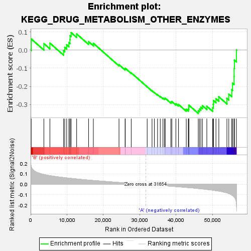
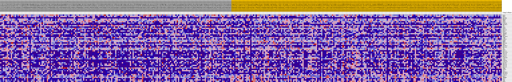
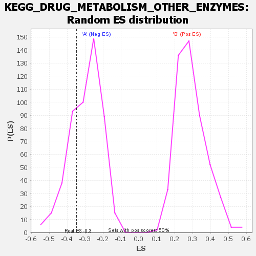

| | | Dataset | my.my.cls#B_versus_A.my.cls#B_versus_A_repos |
| Phenotype | my.cls#B_versus_A_repos |
| Upregulated in class | A |
| GeneSet | KEGG_DRUG_METABOLISM_OTHER_ENZYMES |
| Enrichment Score (ES) | -0.34912902 |
| Normalized Enrichment Score (NES) | -1.1841884 |
| Nominal p-value | 0.27722773 |
| FDR q-value | 0.549964 |
| FWER p-Value | 0.976 |
Table: GSEA Results Summary

Fig 1: Enrichment plot: KEGG_DRUG_METABOLISM_OTHER_ENZYMES
Profile of the Running ES Score & Positions of GeneSet Members on the Rank Ordered List
| SYMBOL | TITLE | RANK IN GENE LIST | RANK METRIC SCORE | RUNNING ES | CORE ENRICHMENT | | 1 | UCK1 | na | 155 | 0.172 | 0.0619 | No |
| 2 | UPP2 | na | 3641 | 0.095 | 0.0362 | No |
| 3 | UGT2B4 | na | 5296 | 0.084 | 0.0385 | No |
| 4 | HPRT1 | na | 9052 | 0.066 | -0.0031 | No |
| 5 | GMPS | na | 9374 | 0.064 | 0.0155 | No |
| 6 | DPYD | na | 9909 | 0.062 | 0.0294 | No |
| 7 | CYP2A6 | na | 10514 | 0.060 | 0.0413 | No |
| 8 | UGT2B17 | na | 10808 | 0.059 | 0.0582 | No |
| 9 | TK2 | na | 10857 | 0.059 | 0.0794 | No |
| 10 | CES1 | na | 11133 | 0.058 | 0.0963 | No |
| 11 | UCKL1 | na | 12642 | 0.052 | 0.0892 | No |
| 12 | UGT1A3 | na | 15920 | 0.041 | 0.0468 | No |
| 13 | DPYS | na | 17235 | 0.037 | 0.0376 | No |
| 14 | UGT1A1 | na | 24286 | 0.018 | -0.0802 | No |
| 15 | IMPDH1 | na | 25961 | 0.014 | -0.1045 | No |
| 16 | UPB1 | na | 26013 | 0.014 | -0.1001 | No |
| 17 | UGT2B10 | na | 27644 | 0.010 | -0.1253 | No |
| 18 | TYMP | na | 32029 | -0.001 | -0.2025 | No |
| 19 | CYP3A7 | na | 33360 | -0.004 | -0.2244 | No |
| 20 | GUSB | na | 34001 | -0.006 | -0.2336 | No |
| 21 | UMPS | na | 34874 | -0.008 | -0.2460 | No |
| 22 | UGT1A6 | na | 35626 | -0.010 | -0.2556 | No |
| 23 | UPP1 | na | 36367 | -0.012 | -0.2642 | No |
| 24 | UGT2B11 | na | 36785 | -0.013 | -0.2668 | No |
| 25 | UGT1A5 | na | 36994 | -0.013 | -0.2654 | No |
| 26 | TK1 | na | 38537 | -0.017 | -0.2861 | No |
| 27 | UCK2 | na | 38807 | -0.018 | -0.2840 | No |
| 28 | UGT2A1 | na | 39912 | -0.021 | -0.2956 | No |
| 29 | UGT1A10 | na | 40632 | -0.023 | -0.2996 | No |
| 30 | UGT1A8 | na | 42766 | -0.029 | -0.3263 | No |
| 31 | CYP2A7 | na | 43324 | -0.031 | -0.3244 | No |
| 32 | UGT1A7 | na | 43462 | -0.031 | -0.3150 | No |
| 33 | CYP3A43 | na | 43469 | -0.031 | -0.3033 | No |
| 34 | ITPA | na | 46065 | -0.040 | -0.3341 | Yes |
| 35 | CYP3A4 | na | 46387 | -0.041 | -0.3244 | Yes |
| 36 | CYP2A13 | na | 46779 | -0.042 | -0.3154 | Yes |
| 37 | UGT2B7 | na | 47209 | -0.044 | -0.3065 | Yes |
| 38 | UGT1A9 | na | 48414 | -0.048 | -0.3095 | Yes |
| 39 | UGT1A4 | na | 50016 | -0.055 | -0.3170 | Yes |
| 40 | UGT2A3 | na | 50199 | -0.056 | -0.2990 | Yes |
| 41 | TPMT | na | 50251 | -0.056 | -0.2787 | Yes |
| 42 | CES5A | na | 50928 | -0.060 | -0.2680 | Yes |
| 43 | CDA | na | 51715 | -0.065 | -0.2576 | Yes |
| 44 | UGT2B15 | na | 53935 | -0.082 | -0.2661 | Yes |
| 45 | UGT2B28 | na | 54455 | -0.088 | -0.2422 | Yes |
| 46 | CYP3A5 | na | 55272 | -0.102 | -0.2183 | Yes |
| 47 | NAT1 | na | 55478 | -0.106 | -0.1819 | Yes |
| 48 | IMPDH2 | na | 55901 | -0.118 | -0.1449 | Yes |
| 49 | NAT2 | na | 55914 | -0.118 | -0.1005 | Yes |
| 50 | XDH | na | 55997 | -0.123 | -0.0557 | Yes |
| 51 | CES2 | na | 56543 | -0.177 | 0.0014 | Yes |
Table: GSEA details [plain text format]

Fig 2: KEGG_DRUG_METABOLISM_OTHER_ENZYMES
Blue-Pink O' Gram in the Space of the Analyzed GeneSet

Fig 3: KEGG_DRUG_METABOLISM_OTHER_ENZYMES: Random ES distribution
Gene set null distribution of ES for KEGG_DRUG_METABOLISM_OTHER_ENZYMES